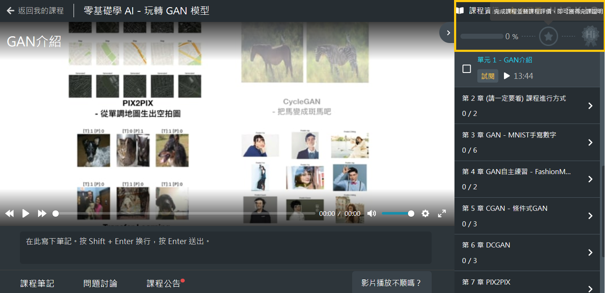
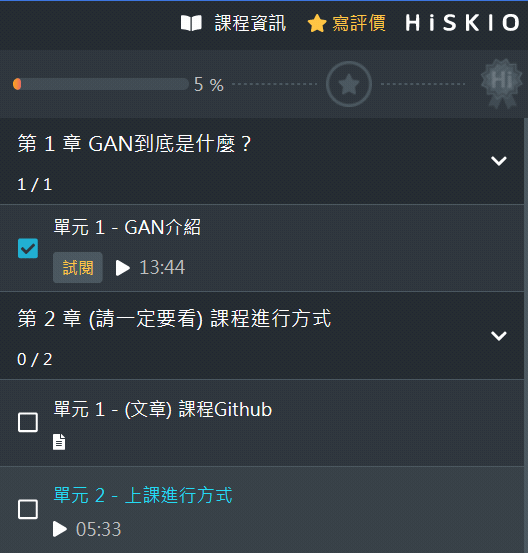
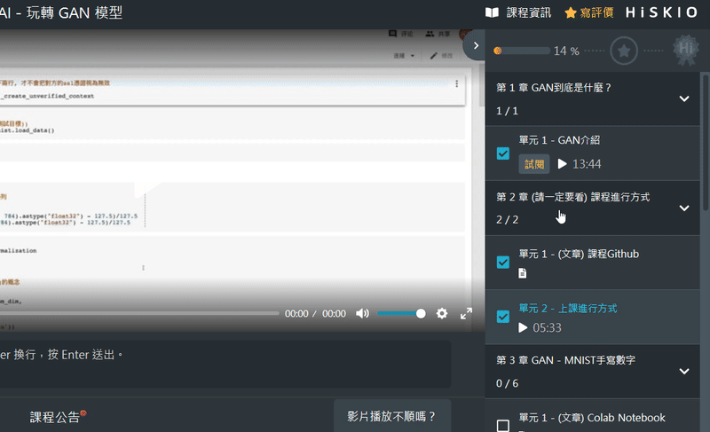
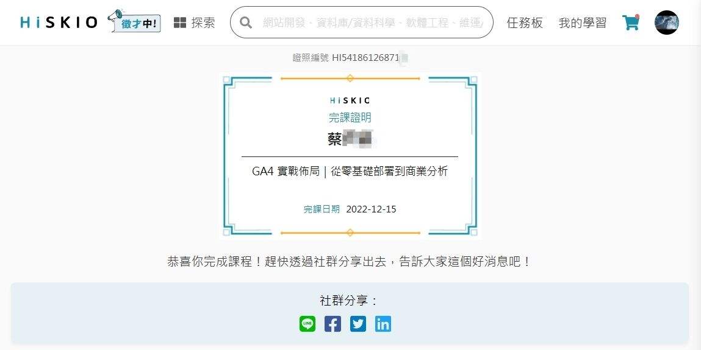

如何取得完課證明?
要取得該課程的完課證明，可以進入該課程的學習頁中，查看右上角的位置（黃框）。
不同課程有不同的完課條件，基本上只要您 完成整個課程 + 填寫課程評價，即可獲得完課證明。

如何增加完課進度
當您完成一小節後，請在右則課程章節中打勾，代表您已經完成該章節，上方自動出現完課進度。

如何填寫課程評價？
同樣在右上角，會有「寫評價」，點選後則可填寫您對課程的滿意星數、評價與心得！
所有評價都會出現在 課程資訊 的 課程評價 中，提供其他人參考哦！

完課證明樣式
完成課程後，我們的完課證明會是一張電子證書，內含以下這些資訊內容：
- 【完課證明】標題
- 課程名稱
- 證照編號
- 姓名
- 完課日期
小提醒
由於HiSKIO上的課程為 線上課程，因此完課證明 **並不會列明上課時數 ，也無法協助開立簽到單或是提供上課證明 ** ，請預必注意。

更新時間： 16/03/2023